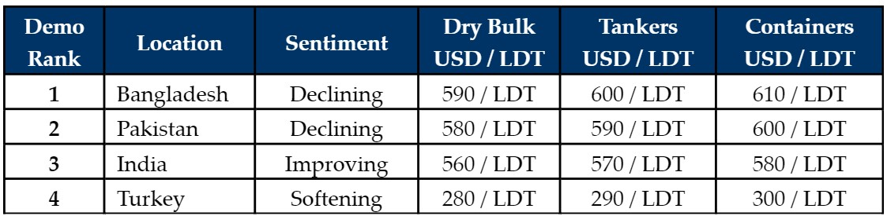

inWeekly Demolition Reports16/08/2021

We have seen the first signs of cooling in the Indian sub-continent markets this week, as steel plate prices declined by about USD 30/LDT inBangladesh. Even the Turkish market showed signs of softening this week, as both import and Turkish local steel prices reported declines of their own, and early indications out of Turkey already seem slightly softer than the preceding weeks.
This has come as something of a surprise to many in the industry, especially since it was only recently announced that China would not be exporting steel until further notice – thereby ensuring domestic supplies do not lose their values with cheap billets undercutting their own inventories.
The significance of this announcement from China is likely to prevent any significant declines in steel prices and may even lead to a stable-to-positive market movements, moving forward into Q4 – especially as the monsoons subside in the sub-continent.
The most recent ship recycling recession greeted us in 2015, when steel prices more than halved as a result of the Chinese market dumping cheap steel billets across global steel markets – leading to the introduction of anti-dumping laws across the Indian sub-continent and elsewhere.
However, fluctuations in steel and vessel prices are a perennial reality in these respective markets, even though fundamentals do remain firm and there seems a small chance of an adjustment in the recycling markets (at least in the short term), especially as forward prices on steel remain bullish to stable.
Several vessels – particularly in the beleaguered tanker sector – continue to work firm on a weekly basis, as shipowners look to cash in on some of these fantastic offerings above USD 600/LT LDT on select units.
For week 33 of 2021, GMS demo rankings / pricing for the week are as below.

Download PDFSource: GMS,Inc.